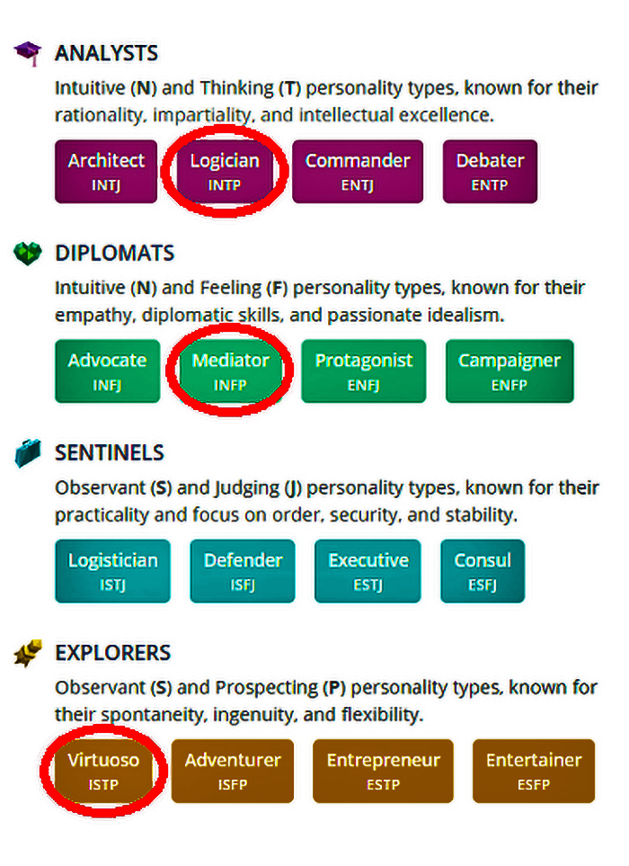

Individual Profile information & Team-mate comparison.
Myers-Briggs Individual Personalities
Here are the results of all five team-members - drawn from the several personality tests we each took as part of our Assignment01 criteria..
Shane Shelly (INTP-A (Assertive Logician))
A Logician (INTP) is someone with the Introverted, Intuitive, Thinking, and Prospecting personality traits. These flexible thinkers enjoy taking an unconventional approach to many aspects of life. They often seek out unlikely paths, mixing willingness to experiment with personal creativity.
Tara Johnson and Annisa Maharanti (INFP-T (Turbulent Mediator))
A Mediator (INFP) is someone who possesses the Introverted, Intuitive, Feeling, and Prospecting personality traits. Making up only 4% of the population, these rare personality types tend to be quiet, open-minded, imaginative, and apply a caring and creative approach to everything they do.
Joanne Mitchell and Jason Barber (ISTP-A (Assertive Virtuoso)}
A Virtuoso (ISTP) is someone with the Introverted, Observant, Thinking, and Prospecting personality traits. They tend to have an individualistic mindset, pursuing goals without needing much external connection. They engage in life with inquisitiveness and personal skill, varying their approach as needed.
Myers-Briggs Team Compatibility..
Of 16 possible personality types according to Myers-Briggs, our five team members fall into only three predominate types being the Logician, Mediator and Virtuoso types.
Although there are variables or nuances within each predominate type being Assertive or Turbulent that can influence an individual’s actions or emotions, the underlying predominate type remains central to the core personality trait.
The predominate personality types also fall into one of four core definitions that may either be Analysts (guided by logic), Diplomats (guided by principles), Sentinels (guided by practicality) or Explorers (guided by excitement).
As you can see in the above diagram, despite our team members falling into only three personality types, our team is well balanced across the four core definitions.
This balance of team members has a high potential for success when working together.
This team will likely see Tara and Annisa with exceptional communicative and creative skills being complemented by the energetic traits of Jason and Joanne to run with ideas and add their own special influence to such creations, before being balanced overall by the also creative but logical nature of Shane.